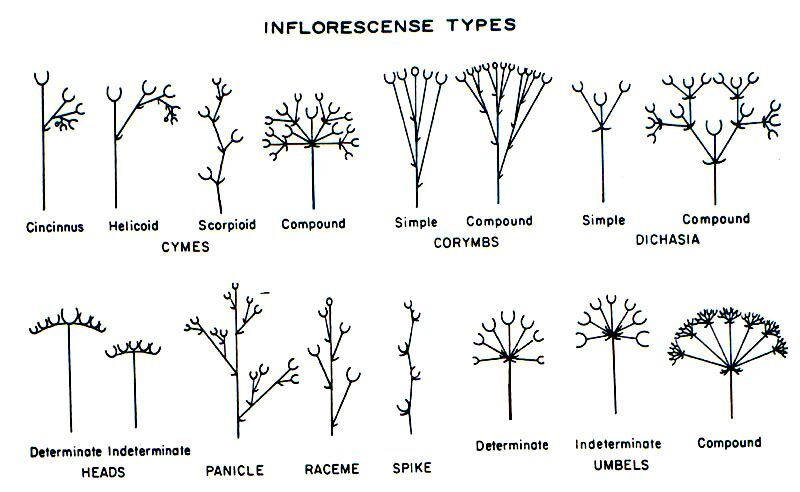
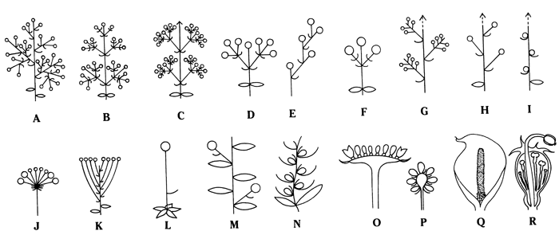
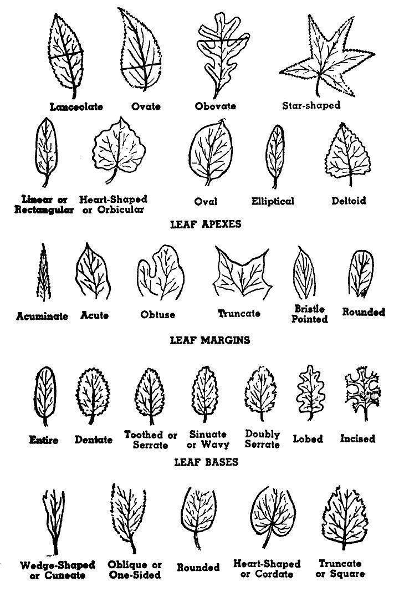
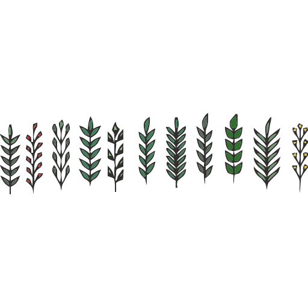

Mipolai
Mipolai
Inflorescence types and leaf shapes
The type of images I like to use are about inflorescence types
Simpler put, its about 'floral structure', or the way flowers are attached to stems.  
offcourse another big point of vegetation, are the leaves, here's a collection of leaf shapes. 
Anyway, when I was busy going deeper I got sidetracked, and ended up just using a static bunch of images with some variations in scale for the moment,
I will come here again and use some fractal code to generate more complex vegetation.
